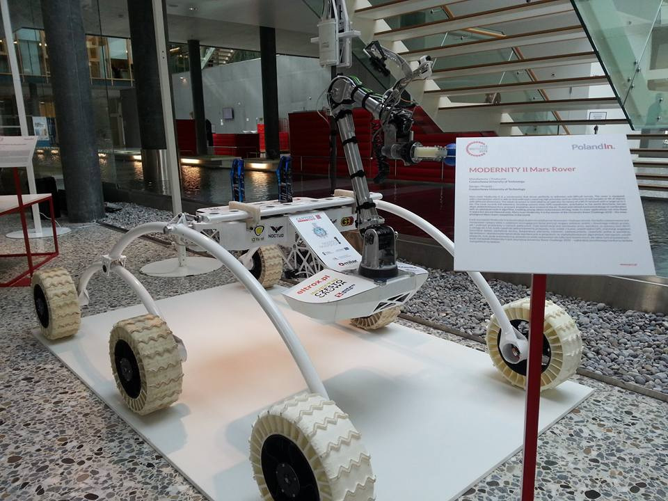
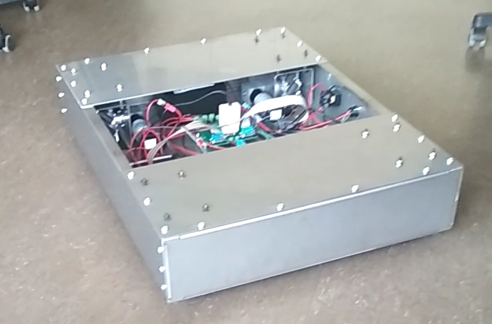

Dominik Mazniak
7th semester mechatronics student looking for a traineeship.
Member of the winning team of the biggest Mars rovers competition in the world - URC 2018.
Interested in automation and self-driving cars.
+4915907653762
mazniakd@gmail.com
88250 Weingarten, Germany
Linkedin
 English B2
English B2
German B1
Polish C2 (native)
Autonomous System of Mars Rover
1st place in the world in University Rover Challenge 2018.
News: URC winners
My website of the project: PCz Rover Team Description: Development of algorithm used to determine the error of the heading of the robot based on given GPS coordinates of the goal and current position of the robot. To increase the accuracy of GPS, Kalman filter with accelerometer was used.

Design of Mecanum Robot on ROS + safety system with PLC and ultrasonic sensors
4-wheeled robot with Mecanum wheels was developed for the company Buck Engineering GmbH.
Description: As my industrial praktikum / project, I had to design a robot that could be used in warehouses and factories. The 600 mm x 800mm x 17mm design makes it possible to transport europalets.
Soft suspension with springs was implemented.
The control system is based on ROS Kinetic and the robot is steerable with Joystick using Wi-Fi. My bachelor thesis is continuation of this project. The safety system with PLC and distance sensors is being implemented together with Graphical User Interface based on Qt custom plugin for ROS.

Obstacle avoidance with ROS (bug0 algorithm, laser scanner)
Full github repository: https://github.com/Mdominik/ROS-turtle
The Final Project for Autonomous Mobile Robots class at Hochschule Ravenbsurg-Weingarten. Full description in the repo.
Done in Python.